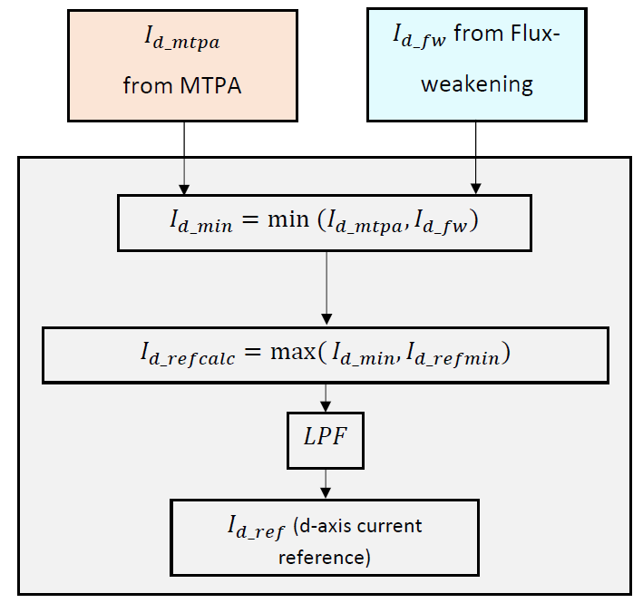
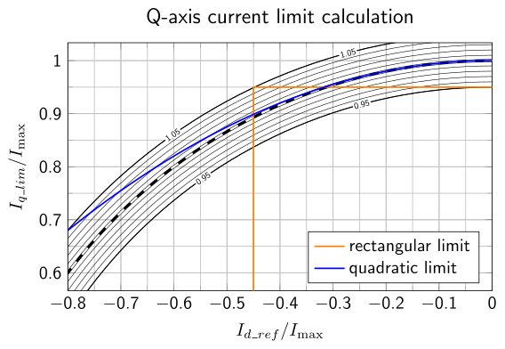

5.5.3. D 轴电流参考生成¶
5.5.3.1. 概述¶
弱磁模块计算 d 轴电流参考 \(I_{d\_fw}\)，而 MTPA 模块计算 d 轴电流参考 \(I_{d\_mtpa}\)。 \(I_{d\_ref}\) 生成模块在 \(I_{d\_fw}\) 和 \(I_{d\_mtpa}\) 之间选择适当的值，并生成 d 轴电流参考 \(I_{d\_ref}\) 作为电流控制器的输入。
q 轴电流限制由 \(I_{d\_ref}\)的值计算得出，以保持电机总电流在可接受的范围内。
5.5.3.2. 流程图和说明¶
图 5.88 展示了 \(I_{d\_ref}\) 模块的流程图。此模块接收 \(I_{d\_mtpa}\) 和 \(I_{d\_fw}\) ，分别来自 MTPA 和 FW 模块。
{kind=link}

图 5.88 \(I_{d\_ref}\) 生成流程图¶
启用/禁用 MTPA 和 FW 的可能用户输入列在下表中。可以观察到， \(I_{d\_ref}\) 的正确选择是 \(I_{d\_fw}\) 和 \(I_{d\_mtpa}\) 的最小值。基于此，在计算 \(I_{d\_fw}\) 和 \(I_{d\_mtpa}\)后，算法计算两者的最小值（\(I_{d\_min}\)）。
用户选择
非弱磁区域
弱磁区域
MTPA 禁用，
FW 禁用
\(I_{d\_mtpa} = 0\)， \(I_{d\_fw}= 0\)
\(I_{d\_fw} = I_{d\_mtpa} = 0\)
不进入
MTPA 禁用，
FW 启用
\(I_{d\_mtpa} = 0\)， \(I_{d\_fw} = 0\)
\(I_{d\_fw} = I_{d\_mtpa} = 0\)
\(I_{d\_mtpa} = 0\)， \(I_{d\_fw} < 0\)
\(I_{d\_fw} < I_{d\_mtpa}\)
MTPA 启用，
FW 禁用
\(I_{d\_mtpa} < 0\)， \(I_{d\_fw} = 0\)
\(I_{d\_mtpa} < I_{d\_fw}\)
不进入
MTPA 启用，
FW 启用
\(I_{d\_mtpa} < 0\)， \(I_{d\_fw} = 0\)
\(I_{d\_mtpa} < I_{d\_fw}\)
\(I_{d\_mtpa} < 0\)， \(I_{d\_fw} < 0\)
\(I_{d\_fw} < I_{d\_mtpa}\)
计算得到的 \(I_{d\_min}\) 与用户定义的最小值（\(I_{d\_refmin}\)）进行检查，如果低于 \(I_{d\_refmin}\)，则限制为 \(I_{d\_refmin}\)。
如此获得的值（\(I_{d\_refcalc}\)）通过一阶低通滤波器，输出 \(I_{d\_ref}\) 作为 d 轴电流控制器的参考输入。
5.5.3.3. Q 轴电流限制的计算¶
与 d 轴电流限制类似，电机的 q 轴电流也施加了限制。实现了两种不同的电流限制方法，即矩形限制和二次限制。此选择可以在 参数自定义中进行。
矩形电流限制：在此方法中，d 轴和 q 轴电流的限制独立定义。限制在 参数自定义中指定。
二次电流限制：在此方法中，生成 d 轴电流参考（\(I_{d\_ref}\)）后，q 轴电流限制通过下面给出的圆函数的二次近似来计算。
(5.55)¶\[\begin{split}\begin{aligned} I_{q\_lim} &= \sqrt{I_{\max}{}^2 - I_{d\_ref}{}^2}\\ &\approx I_{\max}\left(1 - \frac{1}{2} \left(\frac{I_{d\_ref}}{I_{\max}}\right)^2 \right) \end{aligned}\end{split}\]计算得到的 q 轴电流限制被 FOC 路径中的速度控制器用于限制 q 轴电流参考。
这两种方法的示意图如 图 5.89。

图 5.89 \(I_{q\_lim}\) 作为 \(I_{d\_ref}\)¶
的函数所示。条纹曲线表示归一化到 \(I_{\max}\)的最大幅值 1.0，上下以 0.01 幅值为步长显示更细的圆形轮廓线。橙色表示矩形限制，蓝色表示二次限制。应选择限制以最小化超过 1.0 幅值的偏离。在所示的限制下，矩形限制使 \(|I_q/I_{\max}| < 0.95,\;|I_d/I_{\max}| < 0.45\)的最大幅值保持在约 1.05 以下；二次限制使 \(|I_d/I_{\max}| < 0.7\)。
{kind=link}